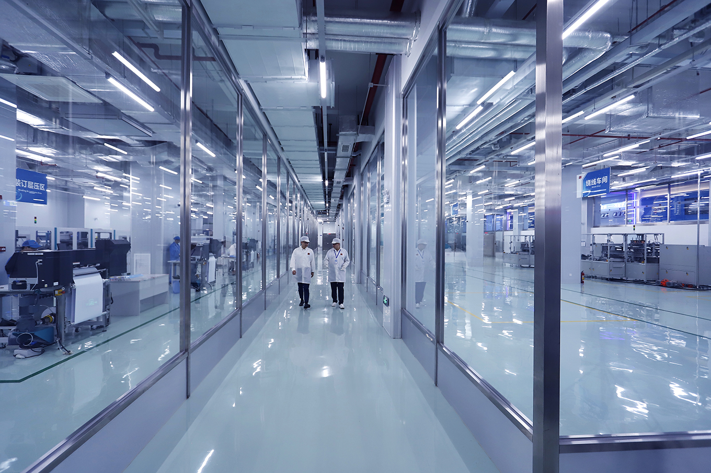
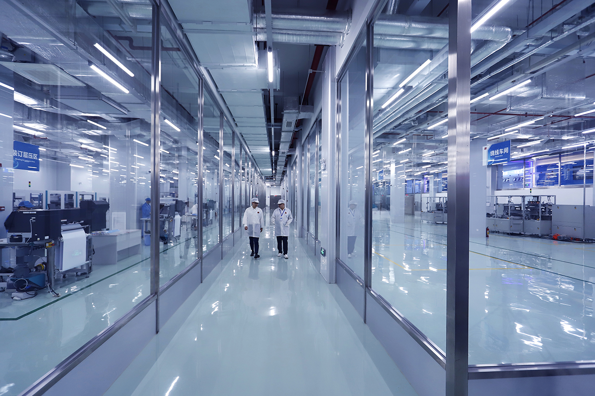

任何一种行业，
如有一窝蜂的趋势，过度发展，就会造成摧残。
- 地产项目
- 环保能源
- 文体旅游
- 国际贸易
- 军民融合
- 电子商贸
营运项目
产业地产
一个为香港科技发展而诞生的智慧城市
2018年国家主席习近平重要批示，支持香港成为国际创科中心。随着大湾区规划推进，社会各界对大湾区的期望和参与热情与日俱增，寄语香港把握大湾区建设的历史机遇，善用中央惠港科技政策的“东风”，为本港创科发展注入强大动力，创造经济增长新动力。
同年五月，习主席对24名在港两院院士来信作出重要批示，支持香港成为国际创新科技中心，为建设科技强国贡献力量，并着有关部门迅速做好贯彻落实工作，有序推进两地相关合作安排。
习主席的重要批示为香港科技界带来极大鼓舞，其中联署的中国科学院院士，港科院院长徐立之表示，大湾区的运作模式，包括世界尖端的高等学府，加上研究、生产的基地，上中下游都有“包办”，完美地将香港的科研成果与大湾区的生产能力无缝接轨，有信心香港能在粤港澳大湾区中担任创科龙头角色。促进并加强香港与内地科技合作，支持香港成为国际创新科技中心，发挥内地和香港各自的科技优势，为香港和内地经济发展，民生改善作出贡献，在香港实行“一国两制”的题中应有之义。
香港拥有较雄厚的科技基础，拥有众多爱国爱港的高素质科技精英，是我国实施创新驱动发展战略、建设创新型国家的一支重要力量，重视香港院士来信反映的问题，抓紧研究制定具体政策，并合理解决，以支持香港科技界为我们建设科技强国、为实现中华民族伟大复兴贡献力量。
集团于2016年意识到香港近二十年来的发展主要以金融及地产为主，但随著国家的高速发展，深圳特区的GDP透过高科技发展亦近超香港之势；集团开展首个以科技产业地产为主题的项目，集团取名为“创智荟”。经过一年多的深入研究，在香港寸尺寸金之地，要发展产业地产成本实属过高，只能另辟途径，研究香港农地发展产业地产的可行性，但香港农地大部份已由四大发展商持有，集团项目团队在不断努力下，发掘到香港一个特殊及未来升值可观的地方，并没有出售给香港地产商或任何投资者；此处正位于香港与深圳连接的第七个口岸 － 莲塘口岸附近。
从深圳莲塘口岸过关到香港，步行10分钟便可到达香港国际创新科技中心；项目首期为20公顷(20万平方米)，总规划为60公顷，是香港有史以来最大的农地收购。集团的高瞻远瞩，能配合香港政府的计划及国家的支持，将此地打造成大湾区国际创科中心，在收地的同时集团已获中国科学院国科金服、清华大学信息技術研究院、清华大学互联网产业研究院、国研智库等多个著名科研机构签定合作意向，为香港引进国内外高新科技企业，吸纳全球科研精英；园区的设计以智能城市为主题，为科研工作人员提供全方位的商业娱乐及居住配套设施。香港政府当局披露，本项目地为政府锐意发展的全新地区，预计发展总面积为720公顷，可容纳25.2万-35.5万人口，提供9.4万-13万个住宅单位及21.5万就业岗位。

国家为促进地热能产业持续健康发展，在《地热能开发利用“十三五”规划》内明确表示，地热能是一种绿色低碳、可循环利用的可再生能源，具有储量大、分布广、清洁环保、稳定可靠等特点，是一种现实可行且具有竞争力的清洁能源。我国地热资源丰富，市场潜力巨大，发展前景广阔。加快开发利用地热能不仅对调整能源结构、节能减排、改善环境具有重要意义，而且对培育 新兴产业、促进新型城镇化建设、增加就业均具有显著的拉动效应。
干热岩是地热能的一种，也是世界各国最常用的一种地热能源。干热岩是指一种没有水或蒸汽的热岩体，主要是各种变质岩或结晶岩类岩体。干热岩埋藏于距地下 2000 ～6000M 的深处，温度为 150～650℃。美国人莫顿和史密斯于1970 年提出利用地下干热岩体发电的设想。1972 年，他们在新墨西哥州北部打了2 口约 4000M 的深斜井，从一口井中将冷水注入到干热岩体， 从另一口井取出由岩体加热产生的蒸汽，功率达 2300KW。进行干热岩发电研究的还有日本、英国、法国、德国和俄罗斯，但迄今尚无大规模应用。干热岩发电系统较干蒸汽发电系统的蒸汽温度更高。美国洛斯-阿拉斯国家实验室在实验基地钻2 口井，其深度约为 3000M，温度约为 200℃，1977 年首次进行了循环实验，证实了这一方案的可行性。自1985 年以来，日本新能源和产业技术综合开发机构（NFDO）在山形县某试验场实施了干热岩工程。到1991 年，通过3 个 1800M 深的生产井和1 个回灌井提取热量。世界上每年获取的干热岩能量约为 255TWH，相当于430 万桶原油，效益庞大。
干热岩地热发电是透过注入井将低温水输入热储水库中，经过高温岩体加热后，在临界状态下以高温水、汽的形式通过生产井回收发电。发电后将冷却水排至注入井中，重新循环，反复利用。干热岩地热发电不仅可大幅降低温室效应和酸雨对环境污染的影响而且具有电价竞争力。在采用先进的钻井和人工热储水库技术条件下，干热岩地热发电比传统火力、水力发电更具有电价竞争力，在不久的将来，干热岩地热资源将成为全球的主导能源之一。
本集团目光远大，于2017年以天使投资人身份，成功投资全国唯一获得美国干热岩发电独家专利技术公司 – 中联友威热能科技有限公司，并开展全国干热岩发电厂建设工作，当中包括山东临沂，山东招远，贵州普安，广西北海，广东廉江，山西忻州等多个城市。首两家发电厂将会座落于广西北海及广东廉江，两家发电厂在未来五年将为广东及广西地区提供每年100亿千瓦时，相等于葛洲坝电厂每年60%的发电量，相信能为集团带来每年数亿元的收入。


近年来，我国冰雪运动快速发展，特别是2022年北京冬奥会的成功申办，为冰雪运动繁荣发展带来了重大机遇。当前，我国正处在全面建成小康社会的决胜阶段，发展冰雪运动有利于满足群众多样化体育文化需求、推动全民健身和全民健康深度融合，对于建设健康中国和体育强国、促进经济社会发展、实现中华民族伟大复兴的中国梦具有重要意义。为贯彻落实《国务院关于加快发展体育产业 促进体育消费的若干意见》（国发﹝2014﹞46号），促进中国冰雪运动繁荣健康发展，特制定 [冰雪运动发展规划(2016-2025年)]。
中国最早的滑雪场出现在上世纪60年代，但商业化的滑雪场在2001年才出现。当时，由私人投资并进行商业化运营的北京石京龙滑雪场开启了中国滑雪商业化的先河。2017年中国滑雪人次为1750万；2018年中国滑雪产业的情况更加理想，在2018年的统计数据中，我国总滑雪人次再创新高，达到空前的1970万人次，同比2017年的1750万人次足足增长了12.6%。
据《北京市人民政府关于加快冰雪运动发展的意见(2016-2022年)》报告统计，2016至2017年冰雪季，中国冰雪旅游市场规模达到1.7亿人次，冰雪旅游收入约合2700亿元人民币。预计，在2021年至2022年冰雪季，中国冰雪旅游人数将达3.4亿人次，收入达6700亿元，冰雪旅游将带动旅游及相关产业的产值达2.88万亿元，助推冰雪运动进入发展的快车道。中国仍是全球最大的初级滑雪市场。
国家主席习近平总书记指出，“要把推动冰雪运动普及贯穿始终，大力发展群众冰雪运动，提高冰雪运动竞技水平，加快冰雪产业发展，推动冬季群众体育运动开展，增强人民体质。”学习这一重要指示，我们深深感到，全民体育事业关乎全民健康、关乎全面小康，提高人民群众健康水平和生活品质是发展体育事业的根本所在。推动冰雪运动普及、推广冰雪项目，让更多群众参与进来，达到强身健体的效果，对于丰富人民群众精神文化生活、提高人民群众幸福感和满意度意义重大。我国冰雪运动起步晚、底子薄、基础差，群众冰雪运动普及率低，参与人口数量少。这就要求我们广泛动员群众参与冰雪运动，激发群众参与热情，夯实冰雪运动的群众基础，努力实现“三亿人参与冰雪运动”的目标。
集团跟随国家发展步伐，2017年着手投放资源，于2018年成功收购北京四季滑雪场项目；项目以室内滑雪竞技为主题，同时引德国人造雪技术及美国的干热岩发电技术，项目占地33万平方米，楼高130米，参考真实滑赛道而建，可同时容纳12000人，总投资80亿元人民币；室内温道保持在零下8度而不用购买外部电力，大大节省了营运成本。项目为首个专业冰雪运动场馆，可供专业冰雪运动员练习，同时集合旅游渡假酒店等设施，为北京地区带来又一新旅游景点。按目前进度，项目在2023年底可正式营运，占有室内滑雪不受天气影响的优势，预期场馆每年使用人次可高达150万，带动每年10亿元人民币收益。


广西东兴与越南山水相连，几十年来，边民们肩挑手扛，把越南的海鲜、特色水果、农作物等产品运进来，把中国的产品运出去，活跃了边境贸易，鼓了自己的钱包。近年来，边民自发抱团发展边贸，国家也出台政策支持，边境贸易进行得如火如荼。
每天清晨八点，冬日沿海的寒风刮在脸上透心凉，广西省东兴市互市贸易区的互市码头上，停满了各种车、船，一艘艘货船缓缓靠近，随着一根缆绳划过，货船瞬时就到了岸边。由于水陆畅通，靠近边界，这里每日熙熙攘攘，商贾云集，货车舟楫络绎不绝。辛勤的搬货工，都是互市贸易区互助组的成员。近年来，东兴市充分利用国家给予边民“每人每天交易8000元货物全免关税和环节税”的优惠政策，创新边民互市贸易方式，成立边民互助组，让边民积极参与边境贸易，在解决边民就业、带旺边境人气的同时，也加速了中越两国的经济融合。
2014年至2017年，东兴市互市贸易进出口总额同比分别增长12%、34%、63％、103%，创造了令人瞩目的“加速度”。作为面向东盟开放的前沿，东兴市灵活运用国家给予的优惠政策和平台优势，通过创新边民互市贸易结算模式，促进跨境贸易发展；通过实施“贸工互动”战略，实现边贸方式转型升级。近日，国务院在第三次大督查中，对东兴经验给予了通报表扬。
2017年开始，东兴市互市贸易结算中心正式成立，边民的互市交易通过柜台进行结算。边民从越南商人处购买了一批海鲜，在结算中心柜台转账后，得到一张提货单，然后直接到仓库提货，前后不到一小时。成立结算中心的初衷是方便交易，经过4年发展，结算中心使用的订单系统已升级到第六版，与海关边贸申报系统、外汇管理局的兑换系统实现了信息对接，只要边民之间发生了交易，海关和外汇管理部门都能监控到，“有效防止了利用贸易进行洗钱、走私等违法行为。如今，在互市贸易区做生意，已不见手持大把钞票的边民，取而代之的是手持单据东奔西跑的身影。目前结算中心已推出移动支付平台，边民只需用手机、指纹、面识便能实现交易，边民互市贸易更为便利。
东兴互市贸易区是为促进中国-东盟自由贸易区经济合作和广西北部湾经济区开发，由广西壮族自治区人民政府鼎力支持，广西北部湾投资集团有限公司实力打造的重点项目，也是广西北部湾经济区商贸基地规划建设的重大项目。2019年本公司与广西北部湾投资集团达成合作协议，收购东兴互市贸易区内的北部湾国际海产品市场。透过东兴互市贸易区的优惠政策，可为市场带来每年超过500亿的贸易额度，同时透过中国人民银行南宁中心支行印发《广西边境个人跨境贸易人民币结算业务管理办法》成立的结算中心再结合保利小额贷款业务，可为每个边民互助组大大提高交易量并增加收入，同时可为集团每年带来数亿元的回报。

军民融合就是把国防和军队现代化建设深深融入经济社会发展体系之中，全面推进经济、科技、教育、人才等各个领域的军民融合，在更广范围、更高层次、更深程度上把国防和军队现代化建设与经济社会发展结合起来，为实现国防和军队现代化提供丰厚的资源和可持续发展的后劲。
美国建立的国防科技工业体系即是“军民融合”的一个典型。美国国会的一份研究报告显示，军民融合给美国国防部每年节约300亿美元，相当于其采办费总额的20%以上。
国家主席习近平总书记在党的十九大报告中指出：“坚持富国和强军相统一，强化统一领导、顶层设计、改革创新和重大项目落实，深化国防科技工业改革，形成军民融合深度发展格局，构建一体化的国家战略体系和能力。
集团在成立之初，为响应中央政府军民融合的大方向，以天使投资者身份，投资军企中成卫星的技术分拆企业，带著军用物联网RFID龙头技术及多项军用级别的高新科技芯片专利，并在广东成立广东中成微电子发展有限公司，为市民提供更高质、便捷、舒适、环保及安全的智能生活为目标。
广东中成深耕高端智能制造领域，与华为新总部地理上位置相邻。广东松山湖高新技术产业开发园区被业界评为亚洲最先进的PC智能证卡生产基地，首期生产基地面积为1.5万平方米至8万平方米研发大楼；生产基地完全按照银联、VISA及万事达要求的国际标准打造；十万级无尘车间、具备严格标准的恒温、恒湿、防静电等功能的生产环境，通过ISO9001、ISO14001、OHSAS18001 管理体系等认证，并取得多项智能证卡相关专利。生产基地引进整套国际顶级的全自动化PC智能证卡生产线，在工艺技术、智能化管理、产能效率、安全和品质上都处于行业尖端水平。车间运用德国最先进的中央管控系统，实时监测、跟踪、统计、控制生产过程中的各个环节，实现一人监控数十台设备的运转状态，真正展现出智能制造工业4.0。
目前广东中成单单在高端智能制造产业板块每年产值已超过30亿元人民币，未来六大板块联动，每年产值可高达500亿元人民币。集团除了是广东中成的原始股东及董事会成员外，也是广东中成唯一的财务顾问，集团已完成广东中成的海外上市股权架构，并准备于2021年中向美国纽交所递交上市申请，最快于2021年底正式上市。集团于天使轮已投入到广东中成，预期广东中成上市后可为集团带来300倍回报。
 

电子支付最早发展起来主要为生活刚需、现金交易不安全性，传统支付方式不便利，如生活充值、缴费、金额交易。其次电商易接受原因，纯线上场景，范围广泛便利、位移简单化，高效率及安全性。而我国的电商在淘宝、支付宝、腾讯的带领下，可算第一批接受电子支付的场景。接下来是O2O，线上选购线下消费的模式，支付作为线上线下的最后成交，如滴滴出行、美团、饿了么都是典型的代表。
门槛最高的是纯线下场景支付，很难实现支付线下简单化，人们习惯在收银台处掏出手机翻找APP里的二维码；并且与线上商户显著的头部效应不同，线下商户数量庞大且非常分散，需要大规模地推，非常耗时耗力。因此线下是最难切入、发展最慢的场景。
现阶段，移动支付已经全面渗透到线下场景。2017年，线上场景的移动支付渗透率已经达到95%以上，基本饱和；而线下市场相对空白，近年来成为各大支付应用竞争的主战场，渗透率从2016年的个位数提升至2018年的55%左右，还有很大的提升空间。更重要的是，线下市场的交易规模庞大，是线上市场的4倍左右，会是未来支付市场规模增量的主要来源，也是支付宝、微信支付等巨头的必争之地。
集团于2018年开始布局，开展国外的电子支付业务，与韩国上市公司开拓韩国微信支付市场。2018年7月6日，集团其下子公司英菲国际战略投资集团有限公司与南韩FORTIS集团 (韩国科斯达克股票代码: #14020) 正式展开合作，开启了公司布局全球业务的第一步。本次合作，有利于两方在电子支付及跨境电子支付的进一步发展，共同拓展市场，提高市场占有率。合作主要内容为电子支付及跨境电子支付的解决方案， 为FORTIS集团的电子商贸平台，设计出合适的电子支付及跨境电子支付方案，并协调适用于韩国主要百货商店、超市及便利店等高达7000多家实体店于线下使用。
澳门特别行政区政府于2016年发布的《澳门特别行政区五年发展规划（2016 - 2020年）》以及近年的政府《施政报告》中，都对澳门建设智慧城市提出明确要求。为落实相关工作，特区政府在建设世界旅游休闲中心委员会之下设立「智慧城巿发展专责小组」，以统筹、推动政府内部开展智慧城市工作，并在科技委员会之下设立了「智慧城市专责委员会」，以推动学术研究、产业发展以及社会推广等方面的工作。此外，特区政府亦于2017年8月与阿里巴巴集团签署《构建智慧城市战略合作框架协议》，以推进政府专有云计算中心及应用大数据技术项目的建设，加快澳门智慧城市基础设施的发展步伐。
随著澳门特别行政区政府针对智慧市场的发展，集团于2017年开始于澳门投资，于2018年下半年，与腾讯云达成合作协议，于澳门青年创业孵化中心召开记者招待会，公布首个腾讯云澳门落地项目，深度挖掘腾讯大数据资源，启动智慧旅游项目“一部手机游澳门”。集团与腾讯云于澳门的合作，可成为一个标志性的起点。
除了将陆续推出新的云服务外，还会针对云服务相关的子业务，与澳门本地不同的电讯营运商、信息科技公司达成合作框架，形成战略联盟，构建智慧共同体，通过政府、产业链与市民三者结合，发展具有价值和可持续的智能城市应用服务。依目前合作伙伴的意向规模，云服务每年可为集团带来近1亿澳门元纯前纯利。